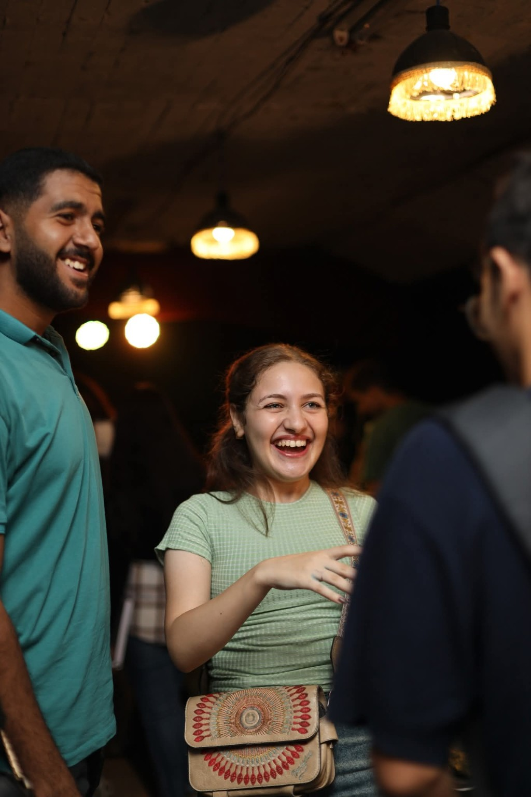
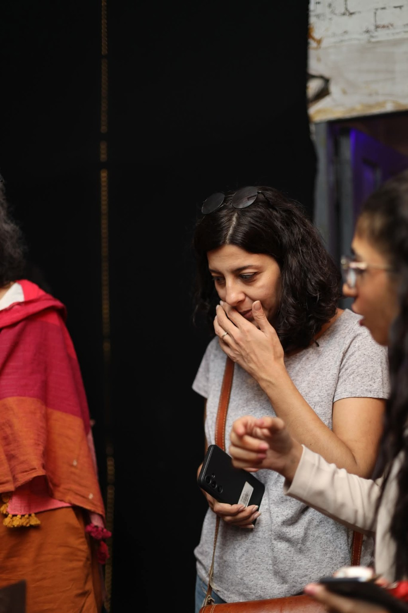
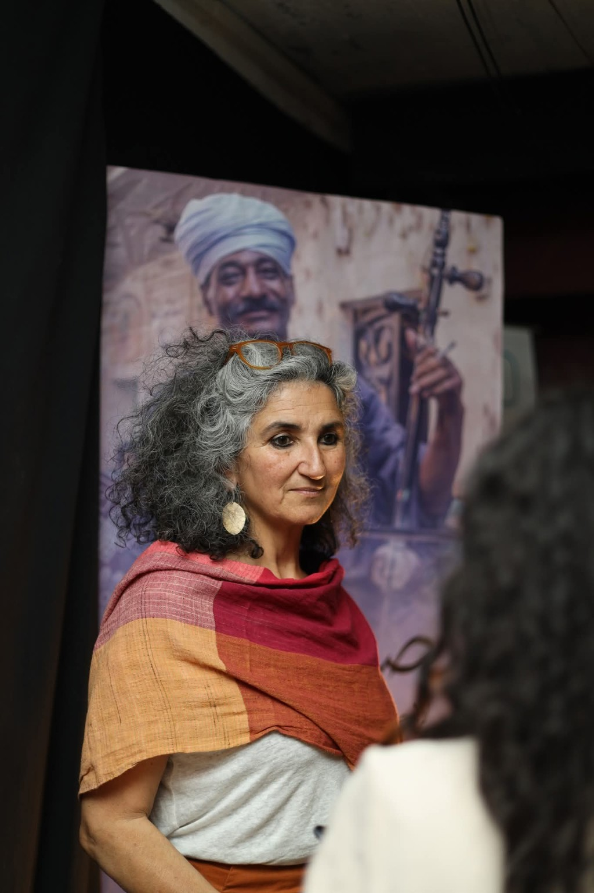
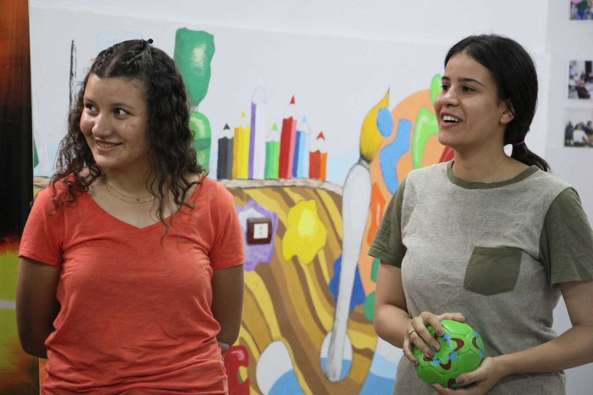
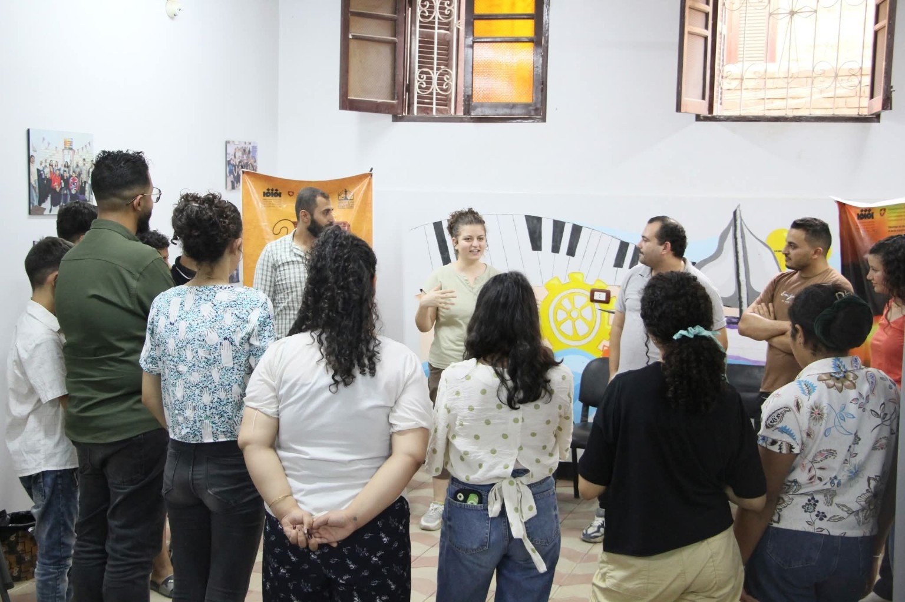
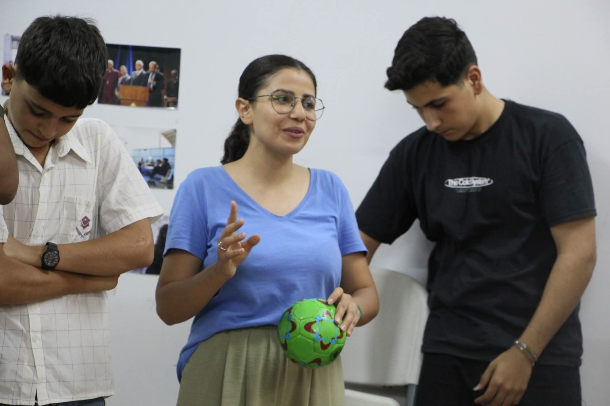
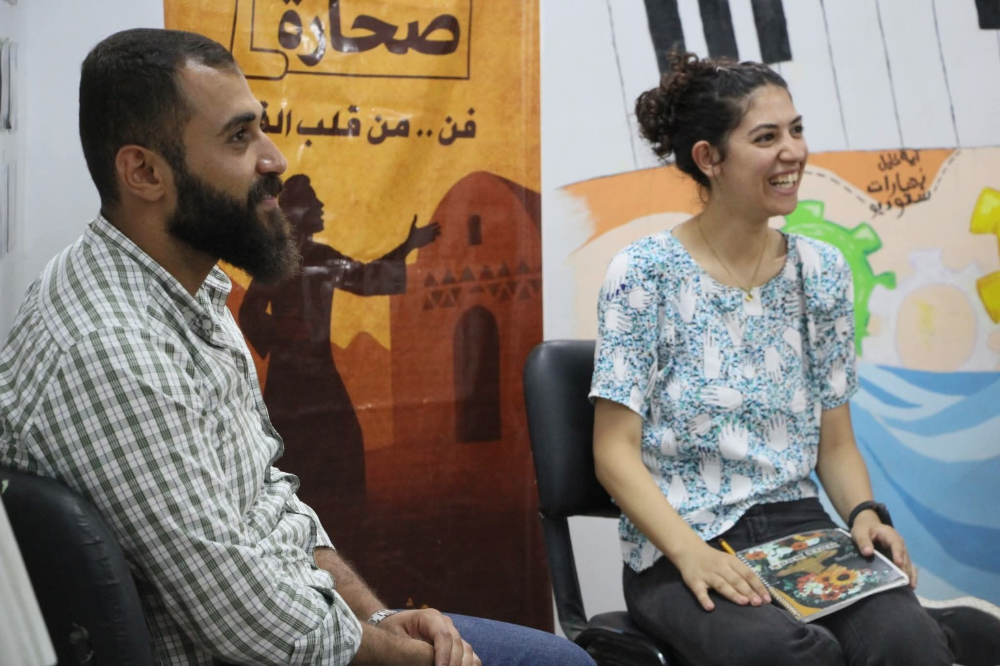
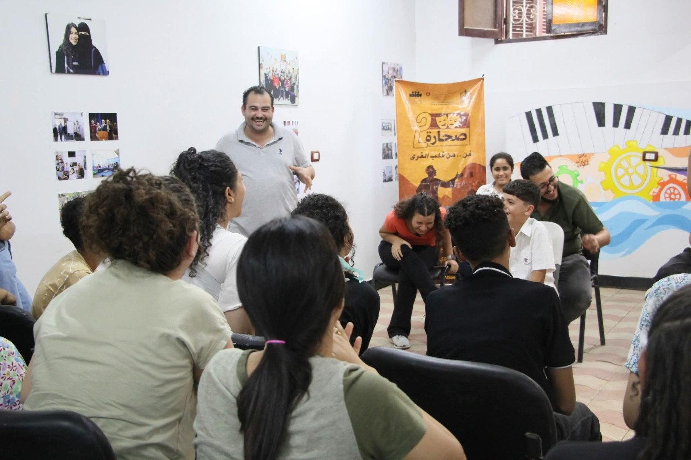

صحارةSAHARAإحياء التراث القروي بالفنون الأدائيةReviving rural heritage through performing arts
مشروع ينقل المعرفة والممارسة الفنية إلى القرى، ويخلق مساحات للإبداع من داخل المكان نفسه — من الحكاية، إلى التدريب، إلى الخشبة.A project that takes artistic knowledge and practice into villages, creating spaces for creativity from within the place itself — from story, to training, to stage.
الفن مش حكر على المدن الكبيرة.Art does not belong only to big cities.
صحارة هو مسار من مسارات تياترو الصعيد لإحياء التراث القروي بالفنون الأدائية، وإتاحة التدريب والممارسة الفنية داخل القرى، مع إعادة قراءة تفاصيل الحياة والتراث المحلي بلغة فنية معاصرة.Sahara is a Teatro Alsaeed pathway for reviving rural heritage through performing arts, bringing training and artistic practice into villages while reimagining local life and heritage through a contemporary artistic language.
معسكر بني أحمد الشرقية
Beni Ahmed El-Sharqia Camp
ثلاثة أيام من التدريب والتفاعل الإبداعي مع الشباب والفتيات داخل القرية.
Three days of training and creative exchange with young participants in the village.
معرض سينوغرافيا القرية الثاني
The Second Village Scenography Exhibition
تجربة بصرية تحول تفاصيل الحياة والعمارة القروية إلى ماكيتات ومشاهد مسرحية.
A visual experience transforming rural life and architecture into theatrical maquettes and scenes.
المكان هو نقطة البداية
Place is the starting point
التدريب، الحكي، السينوغرافيا، الصوت والتسويق أصبحت أدوات يملكها المشاركون ويستخدمونها في التعبير عن بيئتهم.
Training, storytelling, scenography, sound and marketing became tools participants could use to express their own environment.
ثلاثة أيام من المعرفة إلى الممارسة.Three days from knowledge to practice.
من 11 إلى 13 أغسطس، شهدت قرية بني أحمد الشرقية بمحافظة المنيا معسكرًا تدريبيًا ضمن صحارة 2، اجتمع خلاله الشباب والفتيات لاكتساب مهارات إبداعية وفنية في مجموعة من المسارات.From 11 to 13 August, Beni Ahmed El-Sharqia in Minya hosted a training camp within Sahara 2, bringing young participants together around a range of creative and artistic practices.
تدريب عملي على التعبير والأداء والعمل الجماعي.
Practical work on expression, performance and ensemble practice.
استكشاف الحكاية كأداة للتعبير وحفظ الذاكرة.
Exploring storytelling as a tool for expression and memory.
قراءة البيئة وتحويل تفاصيلها إلى لغة بصرية.
Reading the environment and turning its details into visual language.
الكتابة، الإلقاء، تلوين الصوت والنشر الرقمي.
Writing, delivery, vocal expression and digital publishing.
الاستراتيجية، الهوية، الجمهور وقياس النتائج.
Strategy, identity, audience and measuring results.


الصوت يحفظ الحكاية.Sound carries the story.
في ورشة البودكاست والتسجيل الصوتي، قادت كارولين حنا المشاركين في رحلة عملية داخل عالم الإنتاج الصوتي: كتابة نصوص للبودكاست، تقنيات الإلقاء وتلوين الصوت، وطرق النشر والترويج عبر المنصات الرقمية.In the podcast and audio recording workshop, Caroline Hanna guided participants through writing podcast scripts, vocal delivery and digital publishing and promotion.


من الفكرة إلى الجمهور.From idea to audience.
قدّم د. بيشوي صابر ورشة التسويق الإلكتروني وبناء العلامات التجارية، وتناول خلالها وضع استراتيجية تسويق فعّالة، صناعة هوية بصرية، الترويج الذكي للمبادرات، وتحليل الجمهور المستهدف وقياس النتائج.Dr Bishoy Saber led a workshop on digital marketing and branding, covering strategy, visual identity, smart promotion, audience analysis and measuring results.


حين تصبح تفاصيل القرية مشهدًا.When village details become a scene.
على مدار يومين، قدّم معرض «سينوغرافيا القرية الثاني» تجربة بصرية استلهمت تفاصيل الحياة الريفية والعمارة الشعبية، وحوّلت الماكيتات المسرحية إلى نوافذ تطل على روح القرية.Over two days, the Second Village Scenography Exhibition transformed rural life and popular architecture into a visual experience, with theatrical maquettes opening windows onto the spirit of the village.
المكان: تياترو الصعيد – المنيا · 17 و18 أكتوبر 2025Venue: Teatro Alsaeed – Minya · 17–18 October 2025





صحارة بدأت بالاستماع إلى القرى.Sahara began by listening to villages.
في النسخة الأولى، انطلق المشروع من زيارات استكشافية إلى قرى في محافظة المنيا للتعرف على الفرق والمجموعات واحتياجاتها، ثم تحوّل التدريب إلى عروض خرجت من داخل المكان نفسه.In its first edition, the project began with exploratory visits to villages in Minya, meeting local groups and understanding their needs, before turning training into performances born from the places themselves.
زيارات واستكشاف
Visits & discovery
10 قرى في الزيارات الاستكشافية.
10 villages explored.
تدريب وممارسة
Training & practice
التدريب بُني على احتياجات المشاركين.
Training was shaped around participants' needs.
إنتاج من داخل المكان
Creation from place
ثلاث قرى أنتجت أعمالًا قدمت للجمهور.
Three villages produced works for audiences.


أرشيف من قلب القرى.An archive from the heart of the villages.







الفن أقرب مما نتخيل.Art is closer than we think.
يأتي صحارة بالتعاون مع الصندوق العربي للثقافة والفنون – آفاق، والوكالة السويسرية للتنمية والتعاون، ضمن مشروع شمال أفريقيا الثقافي، ومع شراكات محلية تفتح أبواب المعرفة والإبداع داخل القرى.Sahara is developed with AFAC and the Swiss Agency for Development and Cooperation within the North Africa Cultural Project, alongside local partnerships that bring knowledge and creativity into villages.